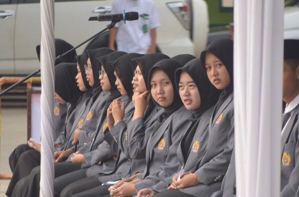
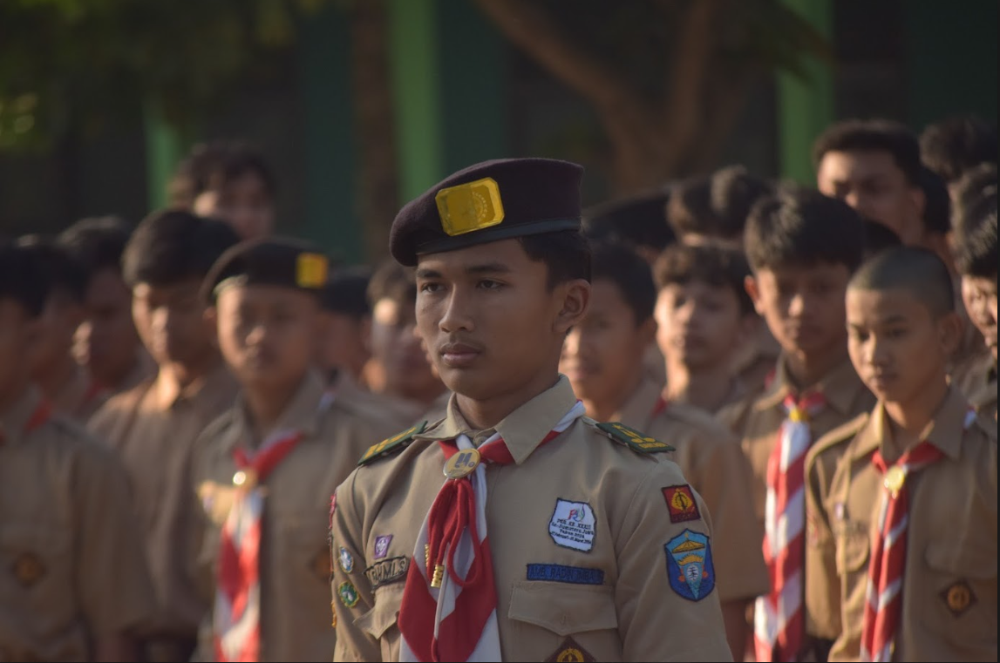
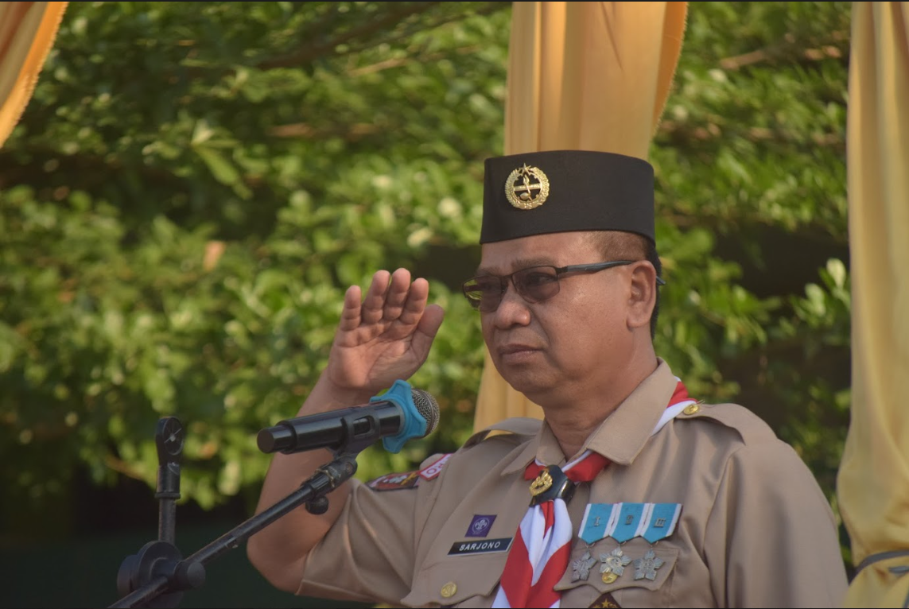
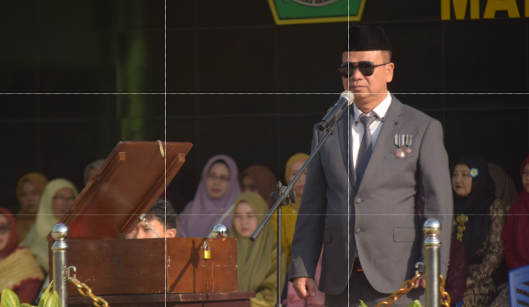

Angle dalam fotografi mengacu pada sudut pandang kamera terhadap objek yang difoto. Angle yang tepat dapat mengubah suasana, perspektif, dan bahkan emosi yang ingin ditampilkan dalam foto.

Ada beberapa Angle yang umum dalam fotografi, yaitu Eye-level, High-angle, Low-angle dan Dutch Angle
Eye-level angle menempatkan kamera sejajar dengan mata subjek, umumnya digunakan untuk Potrait. Angle ini memberikan kesan natural karena menunjukkan apa yang fotografer lihat

High Angle menempatkan kamera lebih tinggi dari subjek, kesan yang ditimbulkan high angle adalah kurang berdaya atau penonton akan merasa berkuasa dalam melihat foto atau video. Posisi kamera akan selalu miring/menunduk ke arah bawah.
Low Angle menempatkan kamera lebih rendah dari subjek. Sering juga sebelum juru kamera mengemasnya dengan low angle pengambilan gambar objek diawali dengan tilt up (dari bawah ke atas). Teknik ini ingin lebih menonjolkan sosok yang berkuasa.

Dutch Angle menempatkan kamera secara miring terhadap subjek, sehingga menciptakan suasana yang tidak nyaman dan membingungkan.
Selain Angle, kita juga perlu mengatur komposisi untuk menciptakan sebuah gambar yang menarik, harmonis, dan menyampaikan pesan yang ingin disampaikan oleh fotografer. Komposisi dapat membuat foto lebih menarik, sebagai cara penyampaian pesan dan memberikan makna pada foto.
Terdapat beberapa prinsip-prinsip komposisi yang umum digunakan, yaitu:
Rule of Thirds merupakan panduan komposisi yang paling sering digunakan, secara sederhananya subjek ditempatkan pada titik-titik perpotongan grid.

Golden ratio dalam fotografi adalah teknik komposisi foto yang membagi frame dan garis vertikal menjadi dua bagian yang tidak seimbang.
Komposisi simetris adalah pengaturan objek atau model di tengah-tengah frame gambar dengan keseimbangan bentuk dan ukuran yang sama antara kiri dan kanan. Komposisi simetris bertujuan untuk menciptakan kesan keseimbangan.